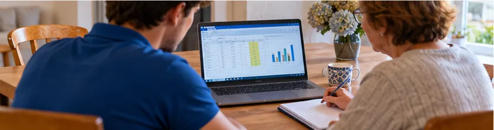

Votre technicien informatique au Relecq-Kerhuon
Le Relecq-Kerhuon, au bord de l'Élorn et au pied du pont Albert-Louppe, est à quelques minutes du centre de Brest. J'y interviens à domicile comme au bureau, pour les particuliers et les petites entreprises.
Le Relecq-Kerhuon est à environ 6 km de Brest, où je suis toute la semaine pour mes études d'ingénieur à l'ISEN. Je peux donc intervenir chez vous sans frais de déplacement, au même tarif que partout ailleurs.
Ce que je fais chez vous au Relecq-Kerhuon
- Dépannage PC fixe et portable
- Ordinateur lent, qui ne démarre plus
- Suppression de virus et logiciels indésirables
- Wi-Fi, box internet, imprimante
- Installation Windows 11 et transfert de données
- Récupération de fichiers et sauvegardes
- Formation Word, Excel, emails, smartphone
- Création de site internet pour artisans et associations
Particuliers, seniors, artisans, commerçants ou associations du Relecq-Kerhuon : j'explique simplement ce que je fais et je vous laisse un ordinateur qui fonctionne.
Dépannage informatique au Relecq-Kerhuon
Le Relecq-Kerhuon est à quelques minutes du centre de Brest, où je suis toute la semaine pour mes études d'ingénieur. J'interviens chez vous en semaine ou le week-end sur rendez-vous, sans frais de déplacement.
Pour les particuliers
PC qui rame, virus et publicités envahissantes, passage à Windows 11, box et Wi-Fi, imprimante, smartphone, sauvegarde des photos de famille. J'explique ce que je fais, sans jargon.
Pour les indépendants et petites entreprises
Dépannage du poste de travail, sécurisation des emails et des mots de passe, sauvegarde, et pour les structures qui veulent aller plus loin, un audit ou un atelier de cybersécurité.
Du bourg au Passage
J'interviens dans toute la commune, du bourg au Passage et le long de l'Élorn, à domicile comme sur le lieu de travail. Pas besoin de déposer votre ordinateur en boutique : je règle le problème chez vous et je vous laisse des conseils simples pour éviter qu'il revienne.
Communes voisines : Guipavas, Brest, Plougastel-Daoulas, Loperhet et La Forest-Landerneau.
Tarifs au Relecq-Kerhuon
Mêmes tarifs que dans tout le nord Finistère, sans frais de déplacement cachés.
Sécurité informatique au Relecq-Kerhuon
Compte Facebook piraté, email usurpé, téléphone qui se comporte bizarrement : je propose aussi un accompagnement en cybersécurité pour les particuliers, artisans et associations du Relecq-Kerhuon.
Questions fréquentes au Relecq-Kerhuon
Intervenez-vous à domicile au Relecq-Kerhuon (29480) ?
Oui, je me déplace à domicile au Relecq-Kerhuon (29480) et dans les communes voisines (Guipavas, Plougastel-Daoulas, Brest, La Forest-Landerneau et Gouesnou) pour tout dépannage informatique, installation d'ordinateur ou formation. Le déplacement est inclus.
Y a-t-il des frais de déplacement pour Le Relecq-Kerhuon ?
Non. Le tarif de 30 € de l'heure comprend le déplacement au Relecq-Kerhuon (29480), à quelques minutes de Brest où je suis toute la semaine.
Proposez-vous la formation informatique à domicile au Relecq-Kerhuon ?
Oui, des séances à votre rythme sur l'ordinateur, les emails, Excel ou le smartphone, à 30 € de l'heure déplacement compris.
Pouvez-vous dépanner à distance ?
Oui, beaucoup de problèmes logiciels se règlent par une prise en main à distance sécurisée, sans attendre un rendez-vous sur place.
Faut-il déposer l'ordinateur en boutique ?
Non. Je viens chez vous au Relecq-Kerhuon et je répare sur place dans la grande majorité des cas.
Mon compte ou ma messagerie a été piraté, pouvez-vous m'aider ?
Oui. Je vous aide à récupérer le compte, à changer les mots de passe, à activer la double authentification et à vérifier que l'ordinateur est sain.
Combien coûte un dépannage informatique au Relecq-Kerhuon ?
Le dépannage et la formation à domicile au Relecq-Kerhuon sont facturés 30 € de l'heure, déplacement compris. L'installation complète d'un ordinateur (Windows, logiciels, transfert de données) est à partir de 50 €. Le devis est gratuit.
Sous quel délai pouvez-vous venir au Relecq-Kerhuon ?
Je suis disponible 7 jours sur 7 sur rendez-vous, du lundi au vendredi de 8 h à 20 h et le week-end de 9 h à 18 h. J'essaie de proposer un créneau rapide, souvent le jour même ou le lendemain. Appelez ou écrivez sur WhatsApp au 06 41 53 73 34.
Proposez-vous aussi de la cybersécurité au Relecq-Kerhuon ?
Oui. Pour un compte piraté, un téléphone compromis ou une association qui veut se protéger, je propose audit OSINT, sensibilisation au phishing et mise en place de bonnes pratiques au Relecq-Kerhuon et dans tout le nord Finistère.
Interventions récentes dans le secteur
Imprimante en panne
Remise en service d'une imprimante qui ne répondait plus : pilotes, connexion Wi-Fi et réglages.
Conseil d'achat d'ordinateur
Aide au choix d'un ordinateur adapté au besoin et au budget, pour acheter au bon prix sans payer pour du superflu. Lire le conseil
Formation Excel
Séance de formation à domicile sur Excel, au rythme de la personne, avec des exemples tirés de ses propres besoins.
Votre situation ressemble à l'une d'elles ? Appelez le 06 41 53 73 34.
J'interviens aussi près du Relecq-Kerhuon
Un souci informatique au Relecq-Kerhuon ?
Appelez ou envoyez un message, je vous réponds rapidement.